What
PCB etching is the process of making your own circuit boards. There are multiple ways of achieving this. This is a description of my experiences and why I now avoid PCB etching, whenever possible.
When I first started I used what is known as the „Toner Transfer Method“. The principle is to use a laser printer to print to a transfer foil. This transfer foil is then laid onto a copper PCB plate. Ironing the transfer foil on the PCB melts the plastic particles in the toner of the laser printer and transfers it to the PCB. After removing the foil the PCB is laid into a bowl with a copper etching chemical. After some time the etched PCB can be removed and cleaned.
The more traditional method is using a principle known from developing photos in photography. I moved to this for more precision. The design is printed onto a transparent foil – either by a laser printer or a standard ink printer. This foil is laid onto a PCB with a special coating. After exposing the PCB with UV light through the foil, this special coating gets damaged where it was hit by the UV light. The PCB is then laid into a bowl with a chemical which removes the damaged parts of the coating. After this the PCB is laid into another bowl with a copper etching chemical and after some time the PCB can be retrieved.
Two other ways that lead to a custom circuit board is ordering them on the internet. The prices seem to have dropped significantly making this feasible. Or by directly CNC miling a copper PCB plate, which is what I am currently heading for. The CNC mill can also be used to drill the holes for the through-hole components.
When
I started PCB etching in ’10 and it was one of the things in electronics I was most excited about. It started with integrated circuits for my 1-Wire Bus. They come in SMD Packages and I was having trouble soldering to them. Now I rather use a strip board, file it down and use magnetwire to build break-out boards or I buy ones online. In fact, I went back to strip boards for almost all my designs and I try to use Arduino Nanos or DigiSparks to spare me the soldering of power regulators and connections for programmers. I actually glue them to strip boards with hot glue. This results in much quicker build times and less frustrations fixing flacky connections.
Why
PCB etching can save a lot of time for circuit boards of medium to high quantities. For high quantities it is best to send the design to a circuit board manufacturer. Etching at home can be useful for first prototypes. I found that the time needed for drawing the circuit and etching it does not nearly pay off for small quantities. The yield is far to low. I found I had to etch at least twice, sometimes 3-5 times for SMD, to get a descent board. Let alone design flaws, which are difficult to fix due to inaccessable components. This is why I solder most of my designs to strip boards, I keep them as small and modular as possible and I use socket stips that have wires stuck in them going all over the place. If neccessary I glue it all down with hot glue. I hardly ever transfer my designs to anything else anymore.
Background
My setup for PCB etching has evolved dramatically over time.
How
1. Steps using the Direct Toner Method (I used this from Okt ’10 to Dec ’13)
|
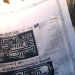
Fig.1: Print to foil |
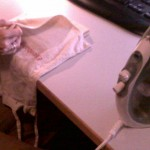
Fig.2: Ironing |
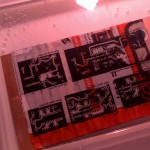
Fig.3: Removing Paper |
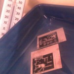
Fig.4: Etching |
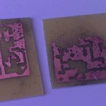
Fig.5: Poor Result |
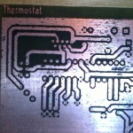
Fig.6: Acceptable Result |
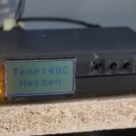
Fig.7: Finished Product |
{kind=link}
{kind=link}
{kind=link}
{kind=link}
{kind=link}
{kind=link}
{kind=link}
I use an HP LaserJet P1005, KiCad for designing the board and very large traces. The toners I use are fake ones from eBay. They waste more Toner, which is good for PCB etching. The whole process is very delicate, which is why I wrote down and optimized each and every step over time. I found that even a change in water hardness, after moving to a new apartment, caused the results to degrade.
-
1. Preparation
-
1.1 Roughen
Roughen copper board using rough side of sponge, twice: horizontally and vertically
-
1.2 Clean
Clean board with aceton
-
1.3 Water Clean
Clean board with water
-
2. Printing
-
2.1 KiCad settings
After designing in KiCad, switch to "inches" and set track width to 0,0640 under "Design Rules" -> "Design Rules Editor". Set "Distance Measure" to "0,0250". Set Text size "SizeX" to 0,0800, "SizeY" to 0,1200 and "Width" to "0,0200"
-
2.2 Print
Set the printer Paper mode to "rough" and the resolution to "FastRes 1200". Switch off the "Econo Mode", to make the printer use more toner. Print onto catalogue paper. I use a catalogue from an electronics distributor called Reichelt. Other paper works so long as it is glossy. Print on the same sheet 2-3 times.
-
3. Ironing
-
3.1 Preparation
Lay the print out face down onto the copper plate. Pour thin coating of aceton onto it, this will help transfer the toner. It evaporates quickly, so immediatly drop it unter a thin cloth and begin ironing. I do this for 20 Minutes straight while rotating the board, to evenly heat it.
-
4. Clean
Paper is now stuck to the copper plate due to the molten toner. We need to clean the paper off.
-
4.1 Water
Drop the plate into approx. 40-50 C warm water for 15 Minutes. Do not use hot water, because it will cause the plate to extract, losening the toner.
-
4.2 Clean Paper
Using a tooth brush, clean the paper off carefully. Do not use detergent, as it will clean off the toner.
-
4.3 Cut
Cut the board to size using a dremel. Do not scratching it with a carpender knife and crack it on the corner of a table, as this may break the toner.
-
5. Optional steps
-
5.1 Draw
Using a waterproof or etch-resistant pen, draw over the traces
-
5.2 Remelt
Drop the plate into an oven for approx. 3 Minutes and remelt the toner to improve stickiness to the plate.
-
6. Etch
-
6.1 Etch
Drop the board into a bowl with etching chemicals. Keep it at approximatly 40 C. This can be achieved by using an outer bowl and replacing some of the water in the outer bowl with boiling water from time to time. Or by using a water heater controlled by a thermostat. Aquarium ones generally can’t heat beyond 35 C, as this would harm fish. I use an immersion heater. The concentration is approx. 1,5 tea spoons of sodium persulfate (ger.: "Natriumpersulfat") for 500ml of Water. The concentration can be increased, but it won’t speed up the etching beyond a certain point. Use a plastic tea spoon! Blowing air into the bowl with an aquarium air pump speeds the process up. Speed is crutial, because the toner can only withstand the liquid for a short amount of time.
-
7. Clean and Drill
-
7.3 Clean
Clean off all the toner using aceton.
-
7.2 Drill
Drill the holes for the through-hole components.
2. Steps using the exposure method (I used this from Jun ’12 to Aug ’15)
|
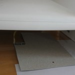
Fig.8: UV Lighting |
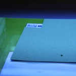
Fig.9: Exposing |
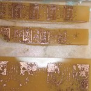
Fig.10: Poor result |
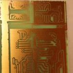
Fig.11: Good result |
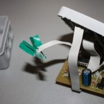
Fig.12: Finished product – 1 |
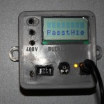
Fig.13: Finished product – 2 |
{kind=link}
{kind=link}
{kind=link}
{kind=link}
{kind=link}
{kind=link}
-
1. Print
-
1.1 Print
Print the design onto a foil using much smaller settings than above.
-
2. Expose and develop
These steps need to be followed in almost absolut darkness. Otherwise the PCB will be exposed with light where it should not.
-
2.1 Expose to UV light
Lay the foil right side up onto the PCB. Put a glas plate onto the PCB and the foil, to keep it flat. I use a Philips facial tanner with 4 Philips CLEO 15W UV light tubes for exposure. Expose for 11 Minutes at a distance of 5 cm. In my experience 16 minutes was far too long and 8 minutes was far too short. I use stacked books on both sides to get the distance of the facial tanner to the PCB right. But beware: The UV light damages the ink on the books.
-
2.2 Develop
Develop the exposed PCB by dropping it in a bowl with sodium hydroxide (ger.: "Natriumhydroxid"). 1,5 tea spoons is sufficient. Leave the PCB in the bowl for only a few seconds. If it comes out blank, then exposure was too long, the print out was too transparant or other light exposed what should not have been exposed. If it comes out black, then exposure was too short.
-
3. Etch
-
3.1 Etch
Drop the board into a bowl with etching chemicals. I use 1,5 tea spoons of sodium persulfate (ger.: "Natriumpersulfat") on 500ml of Water. As before the bowl should be at approximatly 40 C. I use an outer bowl filled with water and an immersion heater controlled by a thermostat.
3. Additional Conciderations:
-
distilled water
I use distilled water in the etching bowl, because I found that differences in water hardnes influence the results. It seems that some chemicals in the tap water bind the etching chemicals and the result is much slower etching. Even when using twice as much etching chemicals
-
chemicals
There are alternative etching chemicals. Some use Iron(III) chloride (ger.: Eisen(III)-chlorid). Etching with this apparently works a lot faster, but it is also far more dangerous to handle.
-
disposal
Disposal of the chemical waste is a big issue. I usually reuse the etching chemicals until the the liquid turns darks blue. Then I let it dry up and collect it before bringing it to a recycling center.
-
air
The concentration cannot be infinitly increased to gain higher etching speeds. However, more air does speed up the process. I use an aquarium air pump.
-
toner transfer with laminators
When using the toner transfer method, there are betters ways to transfer the toner. Many people use modified laminiators (ger.: Laminiergerät).
-
toner transfer with modified printers
Some modify laser printers to print directly onto the PCB. This can produce better results, because the toner does not need to be transfered.
-
exposure
When using the exposure method, there are better ways for exposing the PCB. Some build a special exposure box with UV tubes. A scanner can be modified for this purpose. It already has the glas plate.
-
printing with conductive ink
A new trend in research seems to be printing with conductive ink. Conductive ink is extremly expensive and it does not work on all printers.
-
thermostat
It is important to keep the etching bowl at approximatly 40 – 50 C. I have built a thermostat for this process which automatically turns on and off an immersion heater.
-
vertical setup
Most professional set ups are built vertically. This has the advantage of being able to having air bubbles move along the board being etched. Warm water moves upwards, so a heater at the bottom will automatically stir the etching chemical up. A vertical setup also requires less etching liquid and loses less temperature.
4. Additional Sources:
- Laminators
- Discussion mikrocontroller.net
- Genie L-405 HC mikrocontroller.net
- GBC H65 Laminator makehackvoid.com
- Facial tanners
- Philips TL 29D 16/09N blafusel.de
Progress
As mentioned above I try to move away from PCB etching, because the work by far outweighs the results. Strip boards and breakout boards for SMD components are usually sufficient. Perhaps CNC milling is a viable alternative. The prospect with CNC milling a copper PCB is to be able to practically print the circuit board directly.